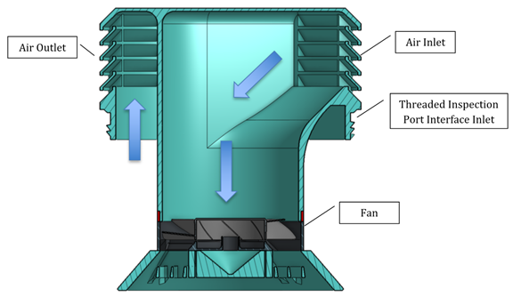
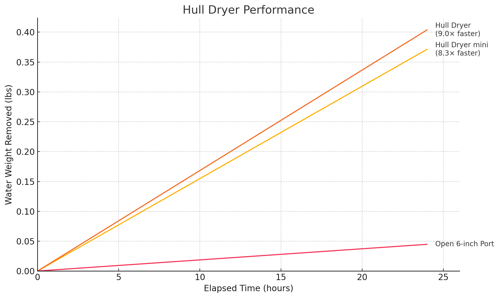

Hull Dryer — A Purpose-Built Boat Dryer for Small Boats
Move air through enclosed hull spaces with a cleaner, repeatable setup.
Hull moisture control
Purpose-built drying through your inspection port.
The MarinerX Hull Dryer is a purpose-built boat dryer that moves air through trapped hull spaces using the inspection port as the interface. Designed for Sunfish, Laser and other small sailboats, it replaces improvised fans, hoses and drying setups with a clean, repeatable solution.
Standard fits Beckson and West Marine 6" screw-in inspection ports, with adapter rings for RWO, Allen, Sea-Dog, Seaflo, and more to come.
12V DCIP68 fanTested airflowAdapters available
Fit check: Use the Inspection Port Guide before ordering if you are unsure which inspection port or adapter you need.
Online checkout currently ships to U.S. addresses only. For other destinations, contact MarinerX about shipping options. Free shipping is available on qualifying orders.
When Would You Use a Boat Hull Dryer?
Water can enter a small-boat hull through leaks, fittings, capsizing or normal use and remain trapped in enclosed spaces. When you need to dry a wet boat hull, the Hull Dryer creates continuous airflow through the inspection-port opening to accelerate air exchange and help remove trapped hull moisture without requiring an improvised fan-and-hose setup.
What Is the Hull Dryer?
When water gets inside the hull, it can really weigh you down and risks damage to your boat. Drying out the inside of the hull usually meant cobbling something together. We designed a clean, purpose-built solution and tested it to optimize airflow and drying performance. The MarinerX Hull Dryer fits securely, works efficiently, and simplifies the whole process.
The MarinerX Hull Dryer actively removes moisture trapped inside your boat's hull using the inspection port as an interface. It's ideal for small craft such as Sunfish and Laser sailboats and any other boat with similar access points.
Standard offering fits Beckson and West Marine brand 6" screw-in inspection port with no adapter needed. If you have a different brand or style port, use an optional adapter to fit your boat. Check the Inspection Port Guide if you are unsure which style you have.
Step 2
Just plug it in
Powered via a 12V DC barrel jack connection (wall adapter included). No switches, apps, or setup required.
Step 3
Circulates air and removes trapped moisture
Actively drying enclosed spaces.

Air enters at the side, is driven downward by the fan, and exits through the hull opening via the inspection port.
Patent pending for the MarinerX Hull Dryer (filed March 2025).
SpecsView specs
Feature
Hull Dryer
Hull Dryer Mini
Port Compatibility
6-inch
(fits Beckson and West Marine 6" screw-in directly) (adapters available for additional brands and styles)
4-inch & 5-inch
(fits Beckson and West Marine 4" screw-in directly) (adapters available for additional brands and styles)
Airflow
101 CFM
39 CFM
Noise Level
57 dB
54 dB
Power Source
12V DC barrel jack
(adapter included)
12V DC barrel jack
(adapter included)
Power Draw
11 Watts
7.8 Watts
Current Draw
1.2 Amps (max)
0.65 Amps (max)
Dimensions
6.5 x 6.5 x 7.25 inches
(extends 4.75" below deck)
4.5 x 4.5 x 7 inches
(extends 4.5" below deck)
Weight
1.3 lbs
0.75 lbs
Fan Waterproof Rating
IP68
IP68
PerformanceSee performance
Controlled tests were run using a sealed container with water inside, simulating a wet hull. Each setup had either an open port, the Hull Dryer, or the Hull Dryer Mini. Tests ran continuously for over 24 hours. All tests were performed in a stable indoor environment.
Results:
- Hull Dryer: 9.0x faster than an open port
- Hull Dryer Mini: 8.3x faster than an open port
Measured Water Removal Rate
(lbs of water removed per day)

This confirms what users experience in the real world: fast, effective, airflow-optimized drying.
The Hull Dryer is designed to screw into standard Beckson and West Marine 6" ports, but we also offer adapters for other port styles. Shown below is the adapter for a Seaflo port. New styles will be added based on customer needs. Use the full Inspection Port Guide for fit matching.
What Boaters Are Saying
"One of the most common problems I find with older boats is rot and water buildup in small crevices under the hull. It's so hard to get this moisture out without cutting the floor apart until I found MarinerXTech and this amazing product! It's truly changed the game by drying out the hull, helping avoid saltwater damage, and keeping boats on the water longer. I can't recommend it enough!"
"Dryer arrived today. Looks well built. I may not be able to try it on my Sunfish until early May but will let you know how it makes out."
"Thanks again for a great, well thought out product. You did an excellent job with the unit and your attention to detail is very apparent."
Order Now
Online checkout currently ships to U.S. addresses only.
For other destinations, contact MarinerX about shipping options.
Free shipping on orders $13 and up.
Choose your Hull Dryer
Standard Hull Dryer
$119.00
Fits 6" Beckson and West Marine screw-in inspection ports. Select an adapter below if needed for other inspection ports.
Hull Dryer Mini
$99.00
Fits 4" Beckson and West Marine screw-in inspection ports. Select an adapter below if needed for other inspection ports.
Power your Hull Dryer or Hull Dryer Mini with a USB battery bank using a 12V USB-C PD to barrel plug cable.
Compatible with any power supply that supports 12V output via USB-C Power Delivery.
Adapters for Hull Dryer
Adapter for 6" RWO screw-in inspection port$3.95
Adapter for 6" Allen screw-in inspection port$3.95
Adapter for 6" Sea Dog Line screw-in inspection port$3.95
Adapter for 6" Seaflo screw-in inspection port$3.95
Adapter for 8" Beckson / West Marine screw-in inspection port$3.95
1.5" Extension Ring for Hull Dryer$3.95
Adapters for Hull Dryer Mini
Adapter for 4" RWO screw-in inspection port$3.95
Adapter for 4" Allen screw-in inspection port$3.95
Adapter for 5" RWO screw-in inspection port$3.95
Adapter for 5" Allen screw-in inspection port$3.95
Looking for compatibility with another port type? Let us know - we can design and 3D print alternate interfaces!
Not ready to buy? Join the email list to stay in the loop.
Thanks! You're on the list.
Have Questions?
Find answers about compatibility, powering, and how the Hull Dryer works.